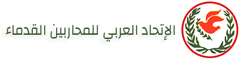

تعليمات بشأن إستخرج بطاقة المحارب العربى القديم
تحميل الأستماره و طباعتها :-
تحميل
أولاً:-
عام :
فى إطار تفعيل الإستراتيجية العربية الجديدة المقترحة (2025م-2027م) والتى تحتوى أحد محاورها الرئيسية
تعظيم وتفعيل دور المحارب العربى القديم من خلال تقديم خدمات ومميزات للمحارب العربى القديم.
ثانياً:-
الإتحاد العربى للمحاربين القدماء وضحايا الحرب يضم كل الدول العربية من المحاربين المقاتلين المصابين القدماء الذى قدموا أرواحهم فداءٌ وتضحية لوطنهم العظيم.
ثالثاً:-
قـــام الإتحـــاد العــربى للمحاربين القدمــاء وضحايــا الحــرب بالتنسيق مع بعض الــوزرات والهيئــات المختلفة
بجمهورية مصر العربية لتقديم مميزات وخدمات للمحارب العربى القديم أثناء تواجده بدولة المقر وتحتوى هذه الخدمات
على (دورات تدريبية وتعليمية – تقديم علاج طبى – إقامة ـ ....).
رابعاً:-
الجهات التى تم التنسيق معها:
1- مستشفى القاهرة الدولي للعيون – الزمالك .
2- مستشفى العربي ( قويسنا – أشمون – العباسية – قليوبية ) .
3- مستشفى السلام الدولي المهندسين .
4- مستشفى فلسطين - مصر الجديدة .
5- مستشفى عبد القادر فهمي - أرض الجولف .
6- مستشفيات القوات المسلحة :
( المجمع الطبي للقوات المسلحة بالمعادي – المجمع الطبي للقوات المسلحة بكوبري القبة – مستشفى القوات المسلحة بالحلمية للتكميل والعظام – مركز الطب الطبيعي وعلاج الروماتيزم بالعجوزة – المستشفى العسكري العام بالأسكندرية – المجمع الطبي للقوات المسلحة الجلاء ) .
7- عيادات العربي .
8- مجموعة صيدليات سيف .
9- صيدليات العربي .
10- صيدليات التهامي .
11- صيدليات ميرا .
12- صيدلية دكتور محمود فودة .
13- صيدلية دكتور علاء الدين .
14- معامل المختبر( تحاليل ) .
15- معامل البرج ( تحاليل – أشعة ) .
16- فندق سونستا ( شارع الطيران ) .
17- فندق البارون ( هليوبوليس ) .
18- فندق فلامنكو ( المطار ) .
19- فندق جولدن أن ( القاهرة ) .
20- فندق أم كلثوم .
21- ( الأكاديمية العربية للعلوم والتكنولوجيا والنقل البحري ( بالاسكندرية ) – الاتحاد العربي لتنمية الصادرات الصناعية ) .
(جارى التنسيق مع جهات أخرى وسيتم الإبلاغ على الموقع فور التصديق).
خامساً:-
صلاحية البطاقة لمدة 5 سنوات إعتبارا من عام 2025م وحتى عام 2029 م
سادساً:-
المستحقين للبطاقة المحارب العربى القديم:
1- الأمانة العامة للإتحاد العربى.
2- رؤساء ومديرى الجمعيات والمنظمات ونوابهم.
3- المحارب العربى القديم / أعضاء الجمعيات والمنظمات .
4- أسرة المحارب والتى تشمل (الأب – الأم – الزوجة – الأولاد ) فقط.
سابعاً:-
مهــام رؤساء ومديرى الجمعيات والمنظمات :
1- إعداد كشوفات بيانات المحاربين القدماء الراغبين فى إستخراج بطاقة المحارب وإرسالها للأمانة الإتحاد.
2- تجميع صور من جوازات السفر ومراجعتها والتأكد من أنها سارية المفعول.
3- التواصل والتنسيق الدائم والمستمر بشأن تحديث البيانات للأعضاء الجمعيات ، إرسالها بالإيميل.
4- إبلاغ الأمانة العامة للإتحاد العربى بمطالب المحارب العربى القديم حالة تواجده بدولة المقر بجمهورية مصر العربية .
ثامناً:-
مهام المحارب العربى القديم:
1- ملء إستمارة إستخراج بطاقة المحارب العربى القديم.
2- صورة من جواز سفر سارية ومجددة (تحقيق الشخصية العسكريه للجمعيه المصرية).
3- تقديم ما سبق إلى الجمعية / المنظمة الخاصة به.
4- يحق للمحارب العربى القديم إستخراج بطاقة من الدرجة الأولى ( الأب – الأم – الزوجه - الأولاد ) كلا على حده.
5- سداد رسم إستخراج البطاقة مبلغ وقدره ( 2 دولار ) وما يعادلها طبقا لسعر صرف البنك المركزى المصرى.
6- رقم الحساب على بنك مصر ( 26065/120/101) بالدولار.
7- رقم الحساب على بنك العقارى المصرى العربى (11300179305020030113) بالجنيه المصرى .
تاسعاً :-
أهم الاستفسارات لاستخراج كارنيه المحارب العربي القديم :
1- المستحقين لاستخراج كارنيه المحارب العربي القديم؟
كل من يحمل كارنيه المحاربين الصادر من جمعية المحاربين القدماء وضحايا الحرب (مجدد وساري العمل به)، بالإضافة إلى الأقارب من (الدرجة الأولى الوالد – الوالدة – الزوجة – الأبناء).
2- هل يجوز استخراج الكارنيه لكلٍ من (الوالد – الوالدة – الزوجة – الأبناء) بعد وفاة العضو الرئيسي؟ ( لا يجوز ).
3- هل الكارنيه مجمع لجميع أفراد الأسرة (كارنيه واحد فقط)؟ ( لا يجوز ).
يتم استخراج كارنيه لكل فرد على حدة (الوالد – الوالدة – الزوجة – الأبناء). نظير الرسوم المقرره لكل مارنية و قيمتها (2 دولار) أو ما يعادها للمصريين.
4- ما هي الأوراق المطلوبة؟
* صورة كارنيه المحاربين (الصادر من جمعية المحاربين القدماء) للعضو الرئيسي (مجدد).
* صورة بطاقة الرقم القومي (وجه و ظهر) لكل فرد ( صورة شهادة الميلاد للأولاد دون السن ).
* صورة 4 × 6 لكل فرد.
* إيصال تسديد الرسوم وقيمتها (2 دولار) أو ما يعادلها بالجنيه المصري للمصريين.
5- ما هي أرقام الحسابات البنكية؟
* رقم حساب بنك مصر ( 26065 / 120 / 101 ) بالدولار .
* رقم حساب البنك العقاري المصري العربي ( 11300179305020030113 ) بالجنيه المصري.
6- ما هو أسلوب الدفع؟ ( نقدي – انستاباي على رقم الحساب ).
( ملحوظة هاااامة جداااا ) التأكيد على التوريد باسم عضو الرئيسي ( حامل كارنيه جمعية المحاربين ).
7- مدة صلاحية الكارنيه؟ المدة ( 5 سنوات ) وتنتهي عام 2029.
8- هل يتم إلغاء الكارنيه عن وصول الأبناء لسن معين؟ ( لا دون التقيد بالسن ).
9- هل يمكن تسليم الأوراق في مكاتب المحافظات؟ ( لا ).
لعدم وجود مكاتب بالمحافظات ( التقديم بجمعية المحاربين فرع الوفاء والأمل أو العجوزة ) .
10- هل تواجد مميزات للكارنيه بالدول العربية؟ ( لا يوجد مميزات بالدول العربية ).
11- هل الكارنيه يستخدم في وسائل النقل ( طيران – قطارات – مواصلات عامة – .....الخ)؟ ( لا يستخدم ).
تعليمات عامة :-
1- تعتبر البطاقة غير سارية المفعول بعد إنتهاء مدة عملها .
2- فى حالة تلف / فقد البطاقة يتم إبلاغ أمانة الإتحاد ورئيس مدير الجمعية التابعة له وإتخاذ كافة الإجراءات المتبعه فى هذا الشأن .
3-سيتم تجميع بيانات المحاربين القدماء الراغبين فى إستخراج بطاقة المحارب العربى القديم فى ميعاد أقصاه نهاية
شهر يوليو 2025م كمرحلة أولى لتقديمها مجمعه إلى جهات الإختصاص وإستخراج البطاقة الجديدة .
4- قيام الجمعيات / المنظمات بالتواصل مع الأمانة بتحديث الأعداد والأسماء والبيانات للمحاربين والتواصل عن طريق الأيميل .
5- البطاقات الشرفية السابقة التى تم إصدارها من الإتحاد والأعضاء أثناء عقد الدورات السابقة والحالية لا يعتمد العمل بها وغير صالحة لتقديم خدمات للمحارب العربى.
6- يتم إرسال نسخة من التعليمات إلى الجهات التى تم التنسيق معها.
تأمل الأمانة العامة للإتحاد العربى للمحاربين القدماء وضحايا الحرب أن يتقدم أكبر عدد من أعضاء الجمعيات والمنظمات لإستخراج بطاقة المحارب العربى القديم الجديده فى التوقيت المحدد حتى يستفيد أكبر قدر من المحاربين القدماء العربى والذى قدموا أغلى ما يملكون.
شكل البطاقة